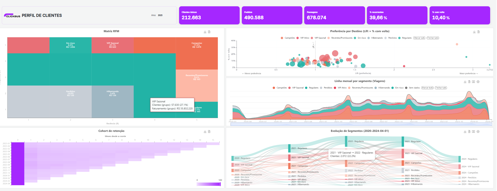

IA & Engenharia de Dados
StudyAgent / Hybrid RAG
Tutor de IA autônomo com RAG Híbrido (HNSW + BM25 via RRF), visão multimodal Gemini 2.0 Flash, n8n e Supabase.
- Gemini 2.0 Flash
- PostgreSQL / pgvector
- n8n
- Hybrid Search (RRF)
Fotos e capturas ficam neste navegador. Baixe o arquivo de imagens para incorporá-las à versão publicada.
AI BUILDER & DATA SCIENCE / FIAP
Atuo como AI Builder, transformando dados brutos e Inteligência Artificial em ferramentas funcionais, agentes inteligentes e automações que resolvem problemas reais de negócio.
Abrir pasta de projetosFormação em andamento
FIAP
Estudante de Data Science na FIAP | AI Builder & Automação de Processos.
Atuo como AI Builder, transformando dados brutos e Inteligência Artificial em ferramentas funcionais, agentes inteligentes e automações que resolvem problemas reais de negócio — do zero ao resultado.
🤖 Inteligência Artificial & Agentes: LLMs, AI Agents, RAG, Human-in-the-Loop
📊 Ciência de Dados & Analytics: Python, Machine Learning, PostgreSQL, Grafana
⚙️ Automação, Aplicações & Web: Node.js, Playwright, n8n, APIs
Dados, aplicações e experimentos em construção.
Tutor de IA autônomo com RAG Híbrido (HNSW + BM25 via RRF), visão multimodal Gemini 2.0 Flash, n8n e Supabase.

clickbus_dataflowSegmentação de clientes e estudo de recompra e rotas em um desafio da FIAP.
Sistema de automação assistida: extração no Drive, varredura de nulos/duplicatas, LGPD, laudos em PDF/Excel e Playwright.
Laboratório de roteiros para vídeos curtos: referências, estratégia, versões A/B e decisão humana.
Nos projetos ligados ao trabalho, apresento a solução e as decisões técnicas. Dados e documentos internos ficam de fora.